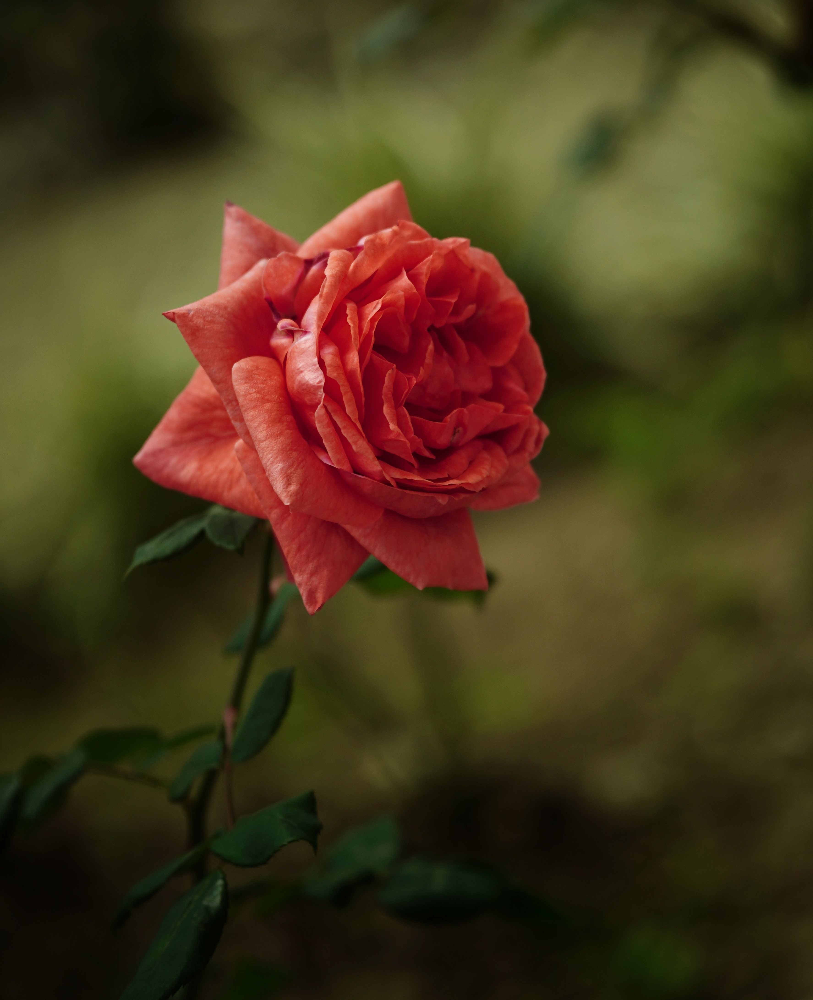
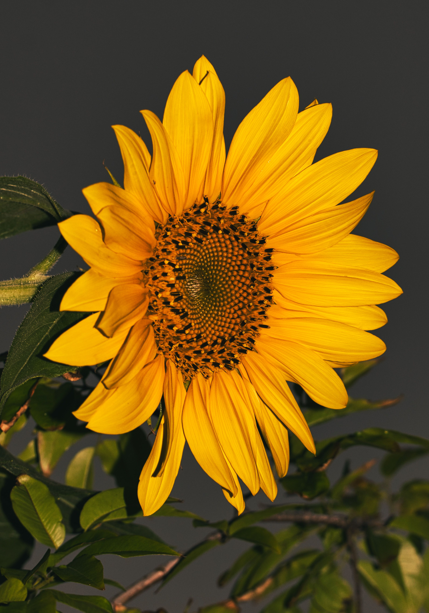
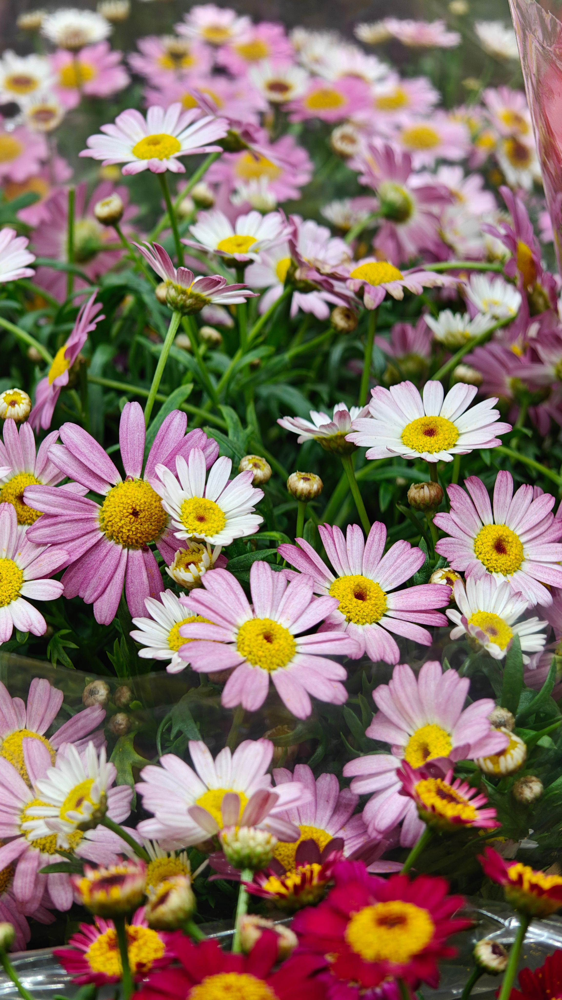
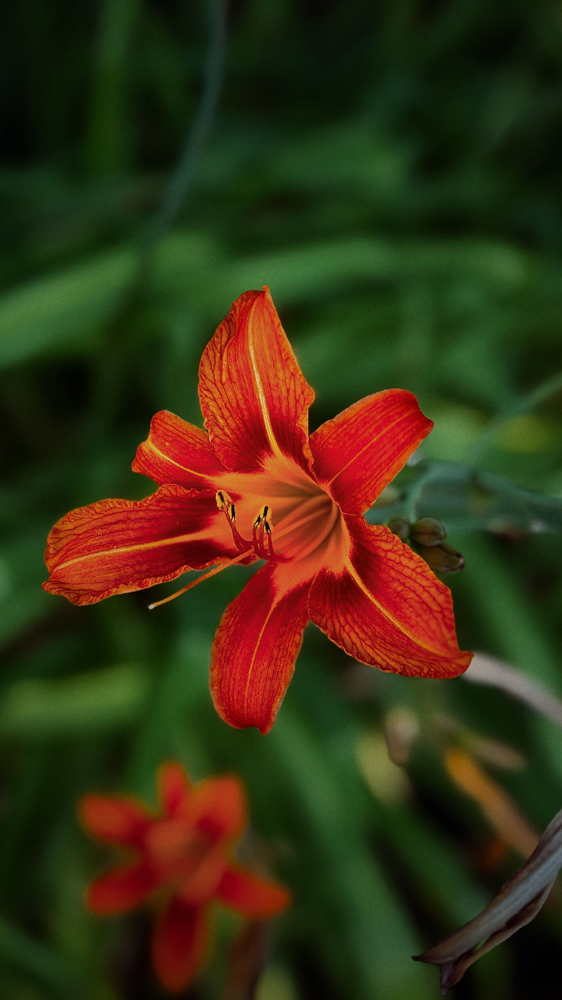
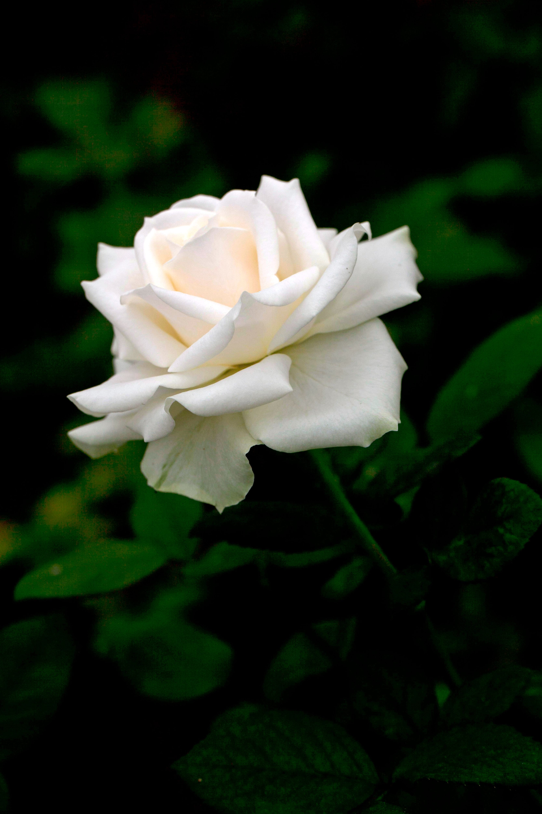

A rosa vermelha é o maior símbolo do amor e da paixão. Representa romantismo, desejo e intensidade emocional.

O girassol representa felicidade, energia positiva, prosperidade e otimismo. Sua aparência vibrante transmite alegria.

A tulipa simboliza amor verdadeiro, elegância e sofisticação. Também está ligada à esperança e renovação.

A margarida representa inocência, pureza e simplicidade. Sua delicadeza transmite leveza e sinceridade.

O lírio simboliza paz, espiritualidade e renovação. É muito utilizado para representar respeito e sentimentos profundos.

A tulipa simboliza amor verdadeiro, elegância e sofisticação. Também está ligada à esperança e renovação.